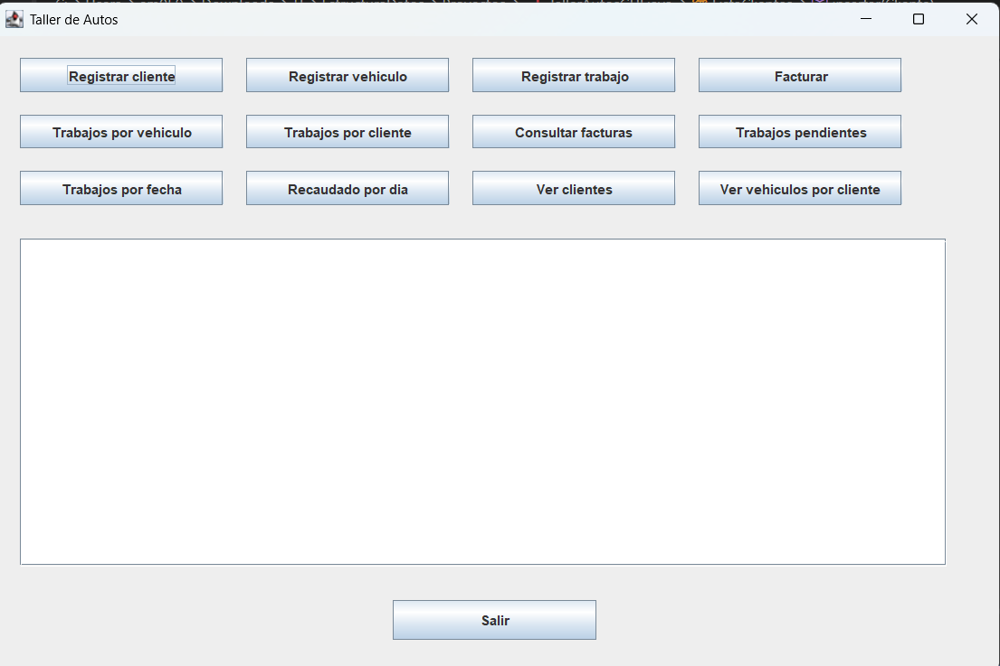

Taller de Autos
Proyecto final del curso Estructura de Datos, Colegio Universitario de Cartago.
Tecnologías usadas
| Tecnología | Uso en el proyecto |
|---|---|
| Java (Swing) | Interfaz gráfica (GUI) e interacción con el usuario |
| Listas enlazadas | Estructuras de datos personalizadas (Clientes, Vehículos, Trabajos, Facturas) |
| Java I/O (FileWriter) | Generación y exportación de archivos de texto (.txt) para facturas y comprobantes |
Cómo funciona
- El usuario interactúa con una interfaz gráfica para gestionar clientes, vehículos, trabajos y facturación.
- Los datos se estructuran internamente con listas enlazadas simples personalizadas (ListaClientes, ListaVehiculos, ListaTrabajos y ListaFacturas).
- Al registrar o consultar un elemento, el sistema recorre secuencialmente los nodos de las listas para realizar validaciones o búsquedas por clave (cédula, placa o código).
- Para la facturación, se calcula el costo total acumulado de los trabajos con estado "Finalizado" en el vehículo seleccionado, y este pasa a estado "Entregado".
- Las facturas (y comprobantes de pago si el método es tarjeta) se exportan automáticamente a archivos de texto locales mediante PrintWriter / FileWriter.
Capturas
